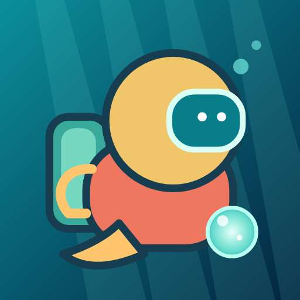
Pearl DriftBasılı tut, yüksel. Bırak, bat. İnci topla, tehlikelerden kaç, 5 farklı sualtı dünyasında rekor kır!
Google Play’de indir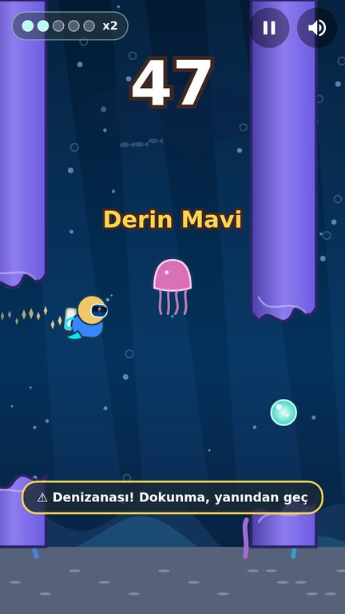
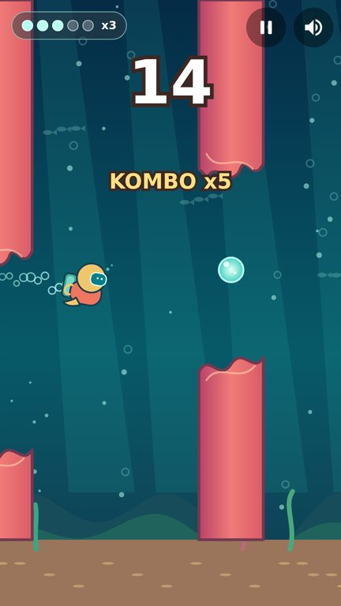
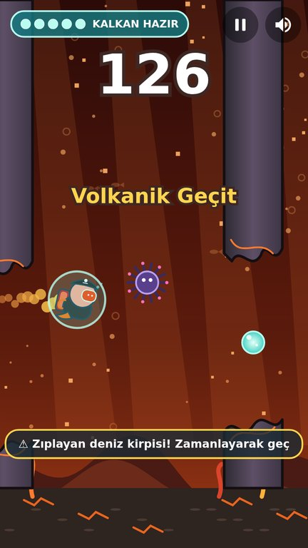
Mercan Resifi, Derin Mavi, Karanlık Uçurum, Volkanik Geçit ve Buzul Denizi.
Denizanası, zıplayan kirpi ve uyarıyla gelen barakuda.
Üst üste inci topla, bonus kazan, kalkanı aç.
Kostüm, aksesuar, iz efekti, inci stili ve güçlendirmeler.
Her gün gir, art arda gün sayısı arttıkça daha çok inci kazan.
İnciyle ya da isteğe bağlı kısa bir reklamla devam et.
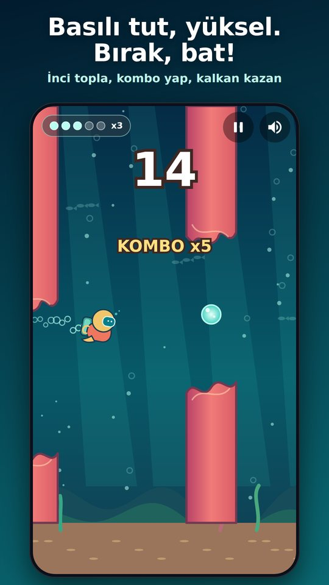
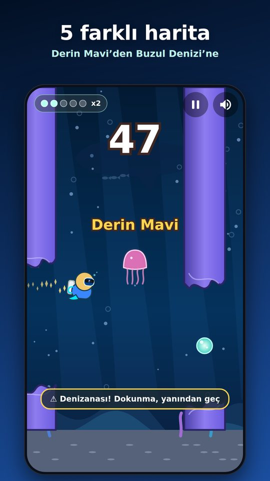
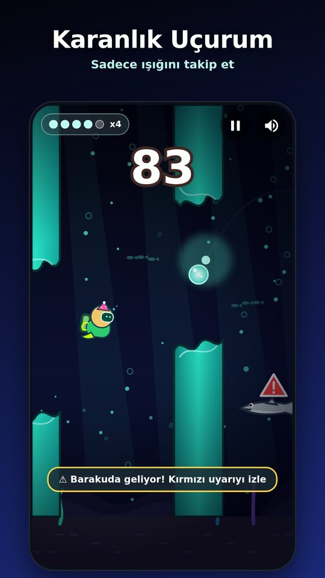
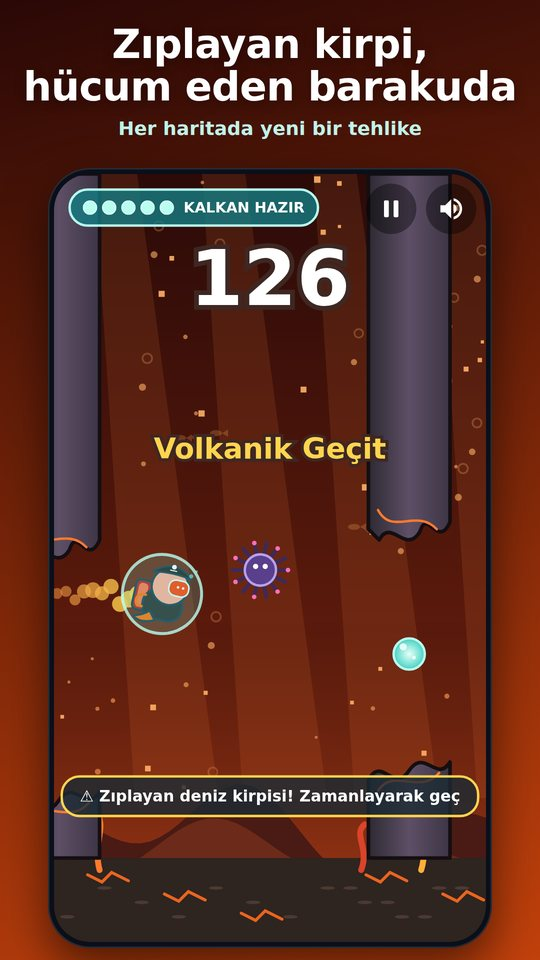
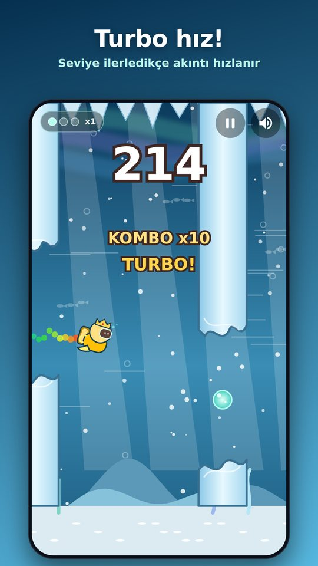
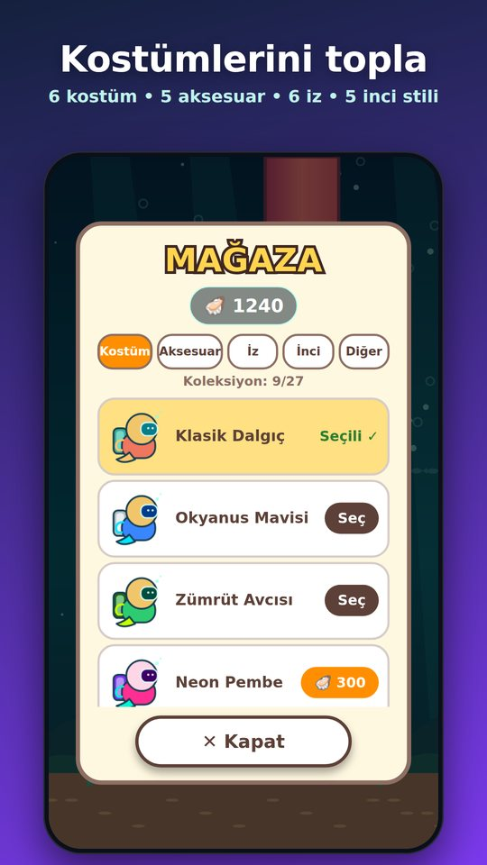
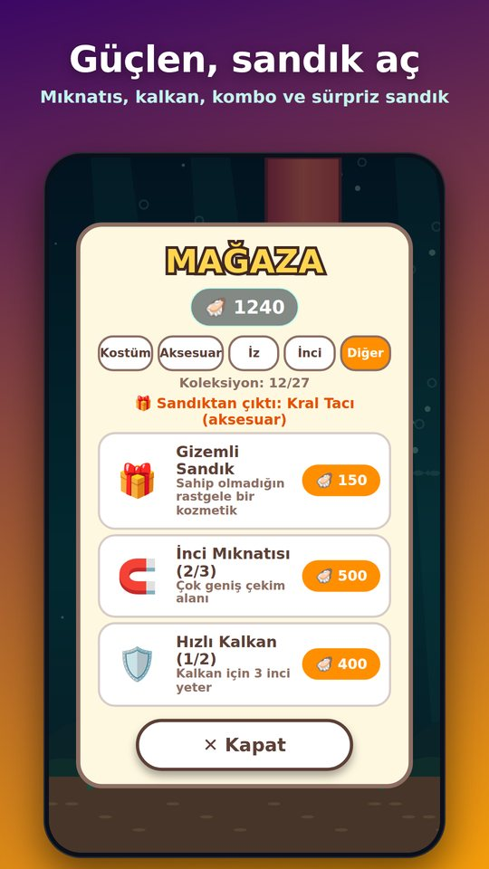
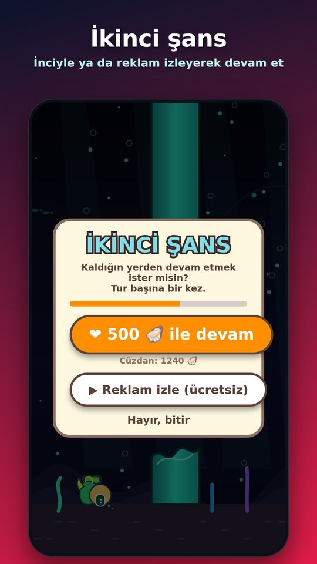
Evet, ücretsizdir ve reklam içerir. Ödüllü reklamlar isteğe bağlıdır.
Hayır. İnciler yalnızca oynayarak kazanılır.
Evet; fotoğraf yalnızca cihazında saklanır, internete gönderilmez. Yalnızca sana ait veya izin aldığın fotoğrafları kullan.
Ekrana basılı tut: dalgıç yükselir. Bırak: batar. Ayarlardan hassasiyeti değiştirebilirsin.